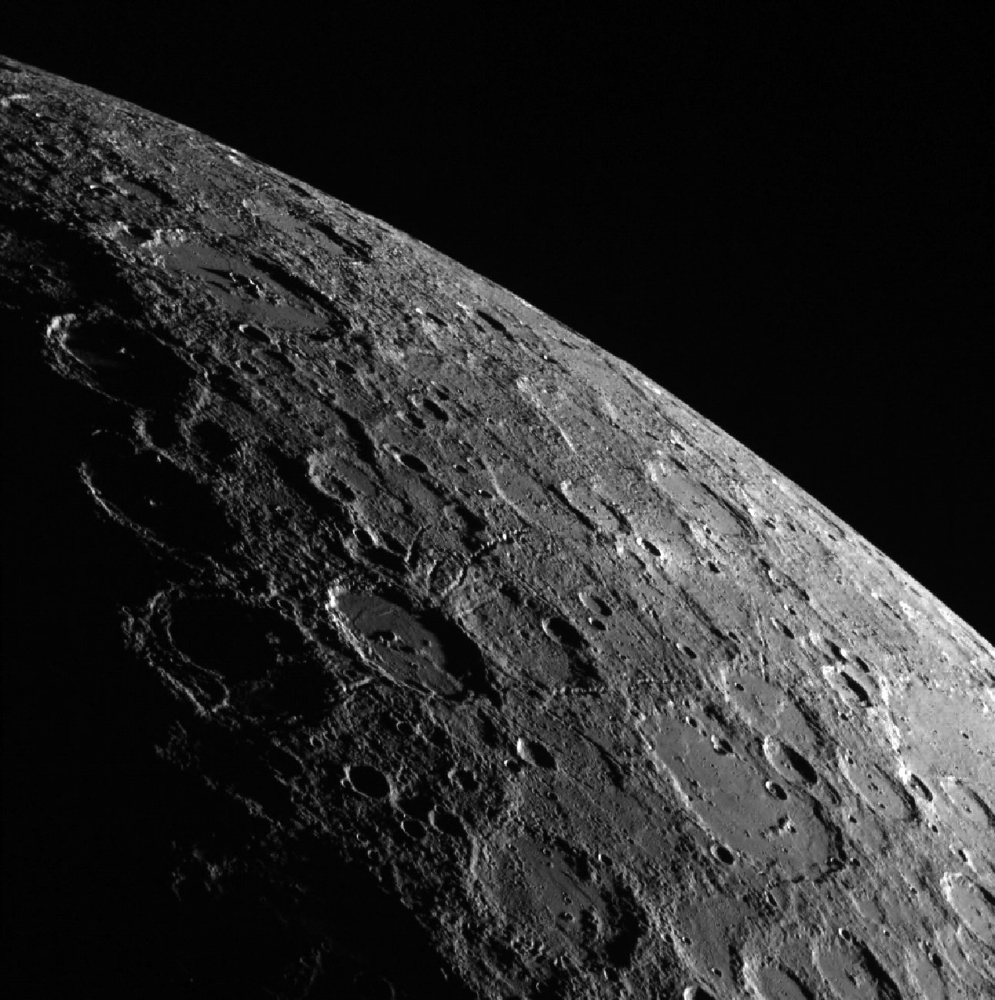
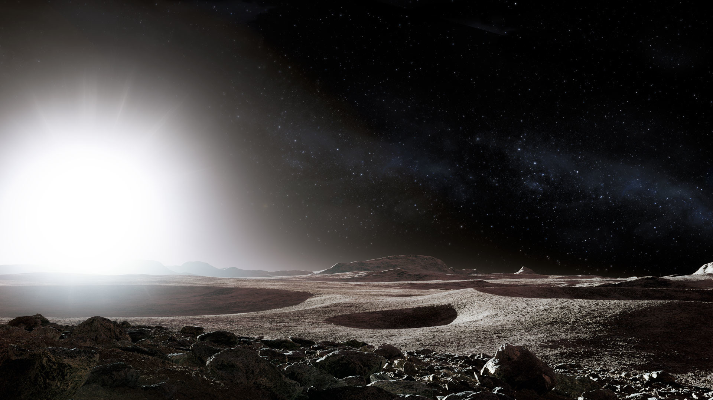

Mercury
Mercury is the closest planet to the sun. It orbits the sun once every 88 days. The first planet is also our smallest, yet it is the second most dense. Mercury is not much bigger than the moon; it's only 1000 km larger than Earth's moon. Mercury has the most varying surface temperatures out of any other planet in the solar system. At its hottest, the surface can get up to 800 degrees Fahrenheit (427 degrees Celsius). During the nights, temperatures drop to -290 degrees Fahrenheit (-180 degrees Celsius).